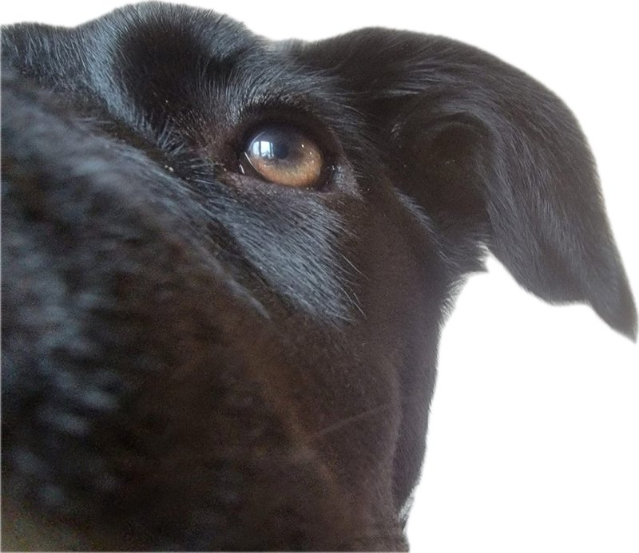

Est. January 15, 1960
Daryl, by the Numbers
A life in numbers, stories, and little wonders.

And just how much life fits into one lifetime?
A Life by the Numbers
Opening review only — the lifetime statistics, birthday almanac, and historical timeline are not redesigned in this pass.